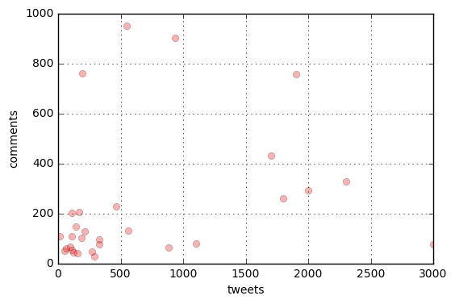

from scipy.stats import pearsonr,spearmanr,linregress
%matplotlib inline
import numpy as np
import matplotlib.pyplot as plt
Determine correlation between the sets
For the three pairwise possibilities, we will check using pearsonr() and spearmanr() (both from scipy.stats) whether they are positively or negatively correlated with less than p=.05 (meaning that there’s less than a 5% probability that the observed correlation would be seen in randomized data).
1
2
3
4
5
for pair,c1,c2 in ('fb/tw',fblikes,tweets),('fb/co',fblikes,comments),('tw/co',tweets,comments):
The results above show that they are all positively correlated (with the Spearman correlation between facebook likes and tweets particularly strong with r=.93). Only the Pearson tw/co correlation is not statistically significant at the p=.05 level.
We also notice from the results that the pair tw/co has a statistically significant Spearman, but not Pearson, correlation. Let’s try to graph it to get some intuition.
1
2
3
4
plt.plot(comments,tweets,'ro',alpha=.3)
plt.xlabel('tweets')
plt.ylabel('comments')
plt.grid('on');

Pearson was not able to see the linear regression because the data is spread out.
Now, for each word, let’s determine whether its number counts in the thirty articles have a statistically significant correlation (again at the less than p =.05 level) with each of the three count lists, using the two types of correlation. We’ll just print a list of words, giving the value of the Pearson or Spearman correlation, or both, if statistically significant.
Lastly, we will find words from the above tests that have the most positive and most negative Pearson correlations between number counts and each of the three lists.
1
2
3
4
5
6
plist={'fb':[],'tw':[],'co':[]}
for w in testwords:
counts=[c[w] for c in wordcounter]
for clist,lab in zip((fblikes,tweets,comments),('fb','tw','co')):